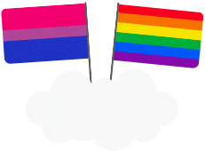

65% de la población LGTBIQ+ siente que la sociedad peruana no es respetuosa
a la orientación sexual / identidad de género. Esto sucede, en parte, por la falta
de conocimiento hacia estos conceptos. Por ello, te los presentamos de manera sencila.
La suma de las características biológicas que definen a las personas como mujeres y hombres.
(Cromosomas, genitales, etc.)
Persona que posee características biológicas asociadas al cromosoma xx
Persona que posee características biológicas asociadas al cromosoma xy
Personas que nacen con variaciones de las características sexuales (genitales, hormonales u
cromosómicas) que no parece encajar en las definiciones culturales de lo femenino y masculino.

Se refiere a las identidades, las funciones y los atributos
construidos socialmente de la mujer y el hombre y al significado sociocultural que se atribuye a
esas diferencias biológicas.
La identidad de género es la vivencia interna
e individual del género tal como cada persona la siente, la cual podría corresponder
o no con el sexo asignado al nacer.
Cuando la identidad de género de la persona corresponde
con el sexo asignado al nacer.

Cuando la identidad o la expresión de género de una persona es diferente de aquella asociada
típicamente al sexo asignado al nacer
La persona se identifica como una mujer y tiene
sexo femenino.
La persona se identifica como un varón y tiene el sexo masculino

Aquella persona que no se identifica con el género que le fue asignado al nacer, y transita
hacia el género neutro o no binario, fuera de los límites de lo femenino y lo masculino, o en
ambos al mismo tiempo.
También conocidas como mujeres trans. Es aquella persona que su sexo asignado al nacer fue
masculino, pero se identifica con el género femenino.
También conocidos como hombres trans. Es aquella persona que su sexo asignado al nacer fue
femenino,
pero se identifica con el género masculino.

Se entiende como la manifestación externa del género de una persona, a través de su aspecto físico,
que puede ser expresado a través del modo de vestir, el peinado o la utilización de artículos
cosméticos, manerismos, de la forma de hablar, de patrones de comportamiento personal, la
interacción social, de nombres o referencias personales, entre otros. La expresión de género de una
persona puede o no corresponder con su identidad de género auto-percibida.

Se refiere a la atracción emocional , afectiva y sexual por personas de un género
diferente al suyo, o de su mismo género, o de más de un género, así como a las relaciones
emocionales
y/o sexuales con estas personas. La orientación sexual es un concepto amplio que crea espacio para
la auto-identifación.
Además, la orientación sexual puede variar, incluyendo la atracción
exclusiva y no exclusiva al mismo sexo o al sexo opuesto.
Mujeres que se sienten emocional, afectiva y sexualmente atraídas por hombres;
u hombres que se sienten emocional, afectiva y sexualmente atraídos por mujeres.

Se refiere a la atracción emocional, afectiva y sexual por personas de un mismo género.

Son aquellas mujeres que sienten atracción emocional, afectiva y sexual hacia otras mujeres.
Son aquellos hombres que sienten atracción emocional, afectiva y sexual hacia otras hombres.
Aquella persona que siente atracción emocional, afectiva y sexual tanto por hombres como
por mujeres.
Aquella persona que siente atracción emocional, afectiva y sexual hacia todos los géneros. En
este caso resalta que la atracción que siente es independiente del género de la persona,
centrándose en el interior de estas.
Persona que siente atracción sexual
y afectiva
Persona que no experimenta atracción sexual por otras personas, pero sí pueden sentir atracción
emocional y afectiva, aunque no necesariamente.
Persona que no experimenta atracción romántica por otras personas, pero sí puede sentir
atracción sexual.
Persona que experimenta atracción sexual por otra solo cuando alcanzan una conexión emocional y
afectiva.
Persona que experimenta atracción sexual por otras personas no de manera frecuente o habitual,
es decir, de manera diferente a los demás.
¿TIENES MÁS DUDAS DE LA SEXUALIDAD?
Carlos Tacuri, psicólogo especialista en diversidades, resuelve algunas dudas sobre la población
LGTBIQ+.


sexual con los dos géneros para considerarme bisexual?